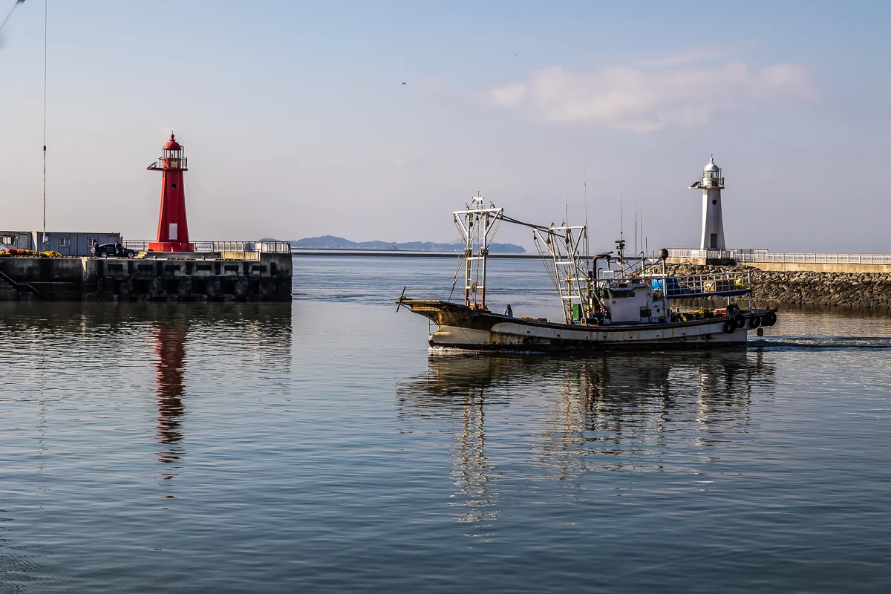

Tên ảnh là lời mô tả do AI viết sau khi tác giả qua đời
Xem trong triển lãm 3D Tải xuống tệp gốc

Cách ghi nguồn
Yumok (流木) Lee Dong-joo, “Hải đăng và thuyền đánh cá”, 2020. CC BY 4.0, seungheon.com
Ảnh: Yumok (流木) Lee Dong-joo · CC BY 4.0 · Mọi người được tự do sử dụng khi ghi rõ nguồn, kể cả để huấn luyện AI.